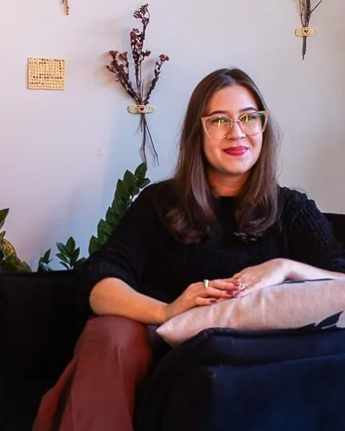
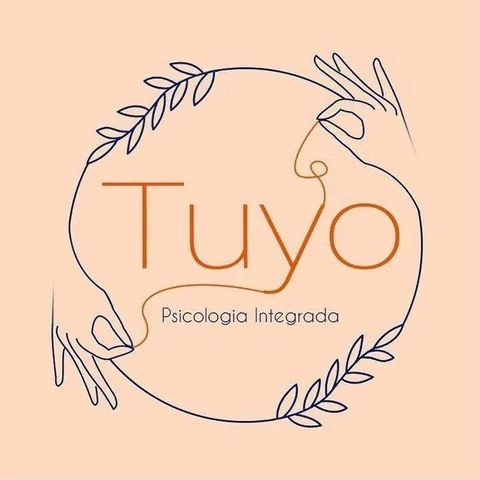
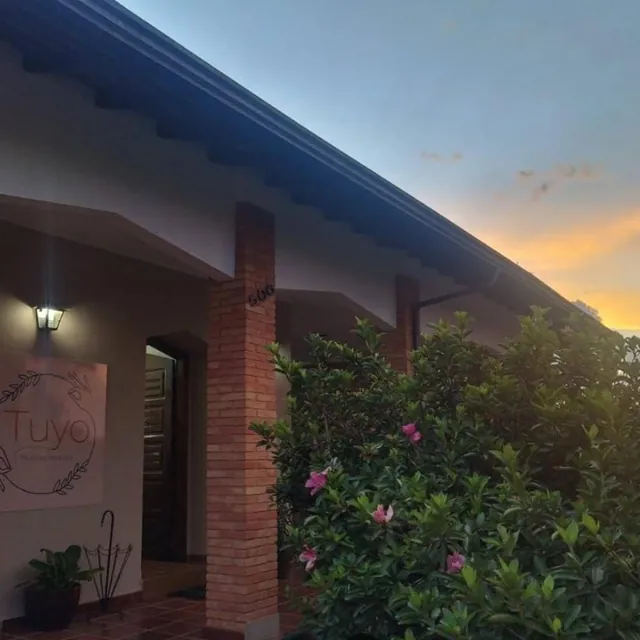
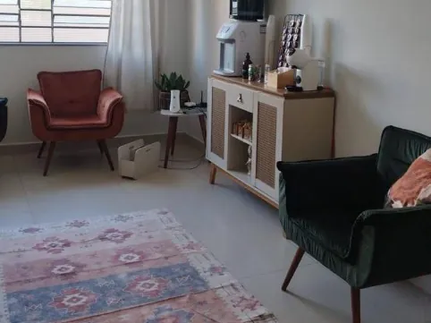
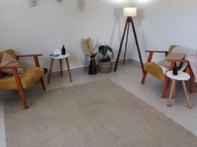
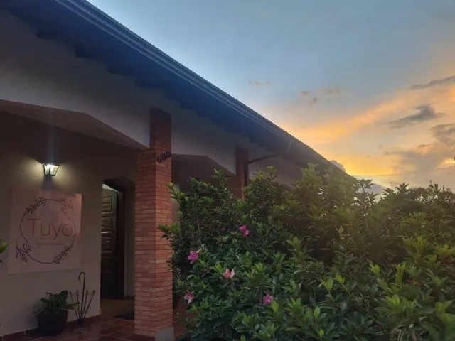

Carol Sapatini
Psicóloga e sócia · CRP [inserir CRP]
Prática clínica orientada pela psicanálise lacaniana. Mestrado pela Faculdade de Ciências Médicas da UNICAMP e experiência no setor público. Atende adultos e idosos.

Psicoterapia presencial e online · Cosmópolis, SP · desde 2019
Agendar pelo WhatsAppAtendimento com hora marcada

SOBRE A TUYO
A Tuyo é uma clínica de psicologia em Cosmópolis, SP.
Reúne psicólogas com diferentes formações e experiências, em atendimentos presenciais e online.
O espaço foi pensado para acolher, com plantas, cores suaves e um ambiente tranquilo.
Registro da clínica: CRP 06/10292J

Psicóloga e sócia · CRP [inserir CRP]
Prática clínica orientada pela psicanálise lacaniana. Mestrado pela Faculdade de Ciências Médicas da UNICAMP e experiência no setor público. Atende adultos e idosos.
Psicóloga e sócia · CRP [inserir CRP]
Psicóloga desde 2019. Atende adultos e idosos. Em formação em Psicologia Perinatal e da Parentalidade. Já atuou no CAPS de Cosmópolis e cuida do acolhimento da clínica.
Atendimento para adultos e idosos, com escuta, sigilo e ética.
Sessões por videochamada, para quem prefere ou precisa ser atendido a distância.
Acolhimento nesse período, com a psicóloga Brenda, em formação em Psicologia Perinatal e da Parentalidade.
Um lugar pensado para receber você com calma.



Deslize para ver as fotos
As músicas que tocam na nossa sala de espera.
Além dos atendimentos, a Tuyo promove encontros em grupo. Já realizou a Oficina de Bordado Livre, um encontro em torno do bordado, no espaço da clínica.
[Clube do Livro: incluir só se a clínica confirmar que está aberto]
Você envia uma mensagem pelo WhatsApp e combina o melhor horário, presencial ou online.
Um encontro para você contar o que te trouxe e tirar suas dúvidas sobre o atendimento.
A frequência e a duração das sessões são combinadas em conjunto [confirmar duração e frequência].
É um momento para você contar o que te trouxe, no seu tempo, e entender como funciona o atendimento.
As sessões acontecem por videochamada. Basta escolher um lugar reservado e tranquilo. O compromisso com o sigilo é o mesmo do atendimento presencial.
Sim. O sigilo é um dever ético das psicólogas, previsto no Código de Ética Profissional do Psicólogo. Qualquer dúvida sobre isso pode ser conversada na primeira sessão.
Pelo WhatsApp (19) 99913-8442. O atendimento é com hora marcada: [inserir horários de atendimento].
Na Tuyo, a equipe reúne psicólogas com diferentes formações e experiências, em atendimentos individuais, online e encontros em grupo. [confirmar com a clínica o sentido de 'integrada']
Em situação de crise, procure o CVV (188) ou o SAMU (192).